Appendix 3: The Multidimensional Inventory of Dissociation (MID)
The Multidimensional Inventory of Dissociation (MID; Dell, 2006a, 2006b) is a multiscale diagnostic instrument that is designed to comprehensively assess the entire domain of dissociative phenomena. The MID has a breadth of coverage that is greater than the brief self-report instruments and structured interviews for dissociation. The MID is a 218-item instrument with 168 dissociation items and 50 validity items. It is written at a seventh-grade reading level. The MID uses an 11-point Likert scale format that is anchored by Never and Always, and takes approximately 30 to 90 minutes to complete. The MID and its Excel-based scoring program1 generates both scale scores and categorical diagnoses (i.e., DID, DDNOS, PTSD, and severe borderline personality disorder). The MID measures 23 dissociative symptoms and six response sets, which serve as validity scales (i.e., defensiveness, emotional suffering, rare symptoms, attention-seeking behavior, factitious behavior, and a severe borderline personality disorder index). The MID’s 168 dissociation items have 12 first-order factors (i.e., self-confusion, angry intrusions, dissociative disorientation, amnesia, distress about memory problems, subjective experience of the presence of alternate personalities, derealization/depersonalization, persecutory intrusions, trance, flashbacks, body symptoms, circumscribed loss of remote autobiographical memory) and one second-order factor: pathological dissociation.
The MID has two scoring systems: total score and severe dissociation score. Total score ranges between 0 and 100. A score of 30 and above is considered a cutoff mark indicative of probable dissociative psychopathology, whereas a score of 10 and below is considered an indication of a low level of dissociation. Severe dissociation scores are based on empirically determined pass/fail cutoff scores for 23 dissociative symptoms. MID severe dissociation scores range from 0 to 168. In one study (Dell, 2006b) of 220 DID cases, the mean total score was 50.6 and the mean severe dissociation score was 124. The average DID patient had 20.2 of the 23 symptoms. MID scores significantly discriminate among four groups: DID, dissociative disorder not otherwise specified (DDNOS) Example 1 (symptoms similar to DID that do not meet the full criteria for this disorder, e.g., no distinct personality states or no amnesia), mixed psychiatric, and nonclinical controls.
MID 6.0: Multidimensional Inventory of Dissociation v. 6.0
Instructions: How often do you have the following experiences when you are not under the influence of alcohol or drugs? Please circle the number that best describes you. Circle a “0” if the experience never happens to you; circle a “10” if it is always happening to you. If it happens sometimes, but not all the time, circle a number between 1 and 9 that best describes how often it happens to you.
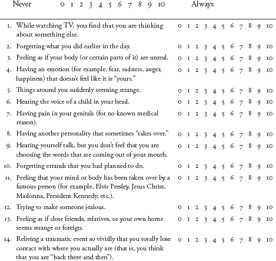
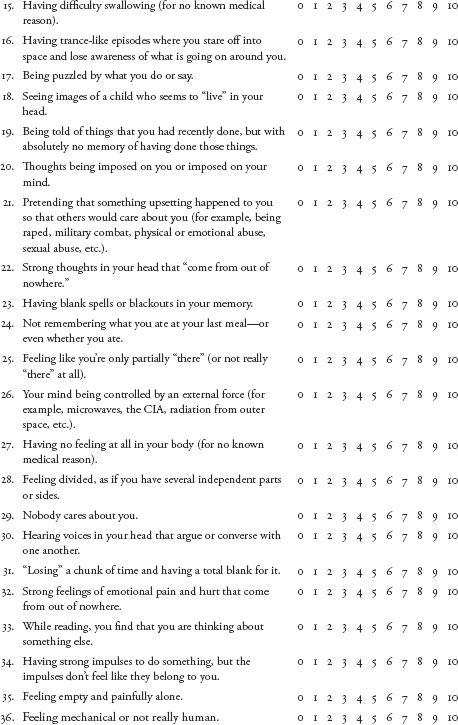
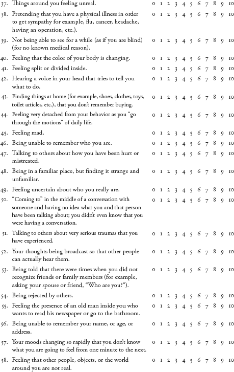
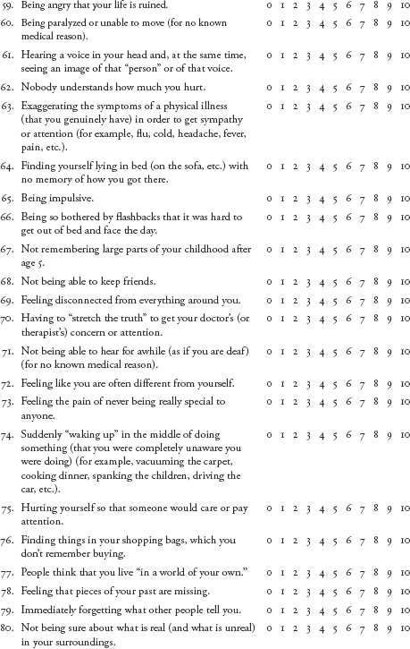
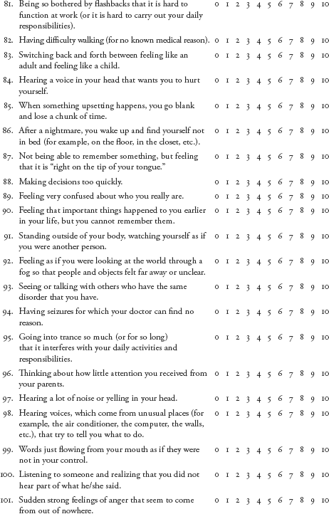
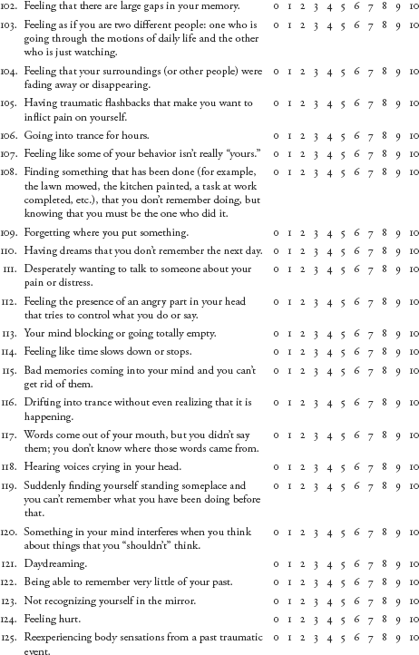
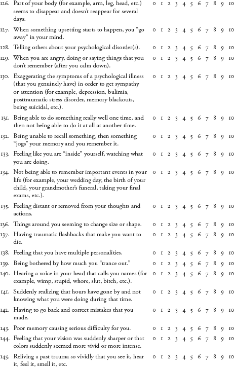
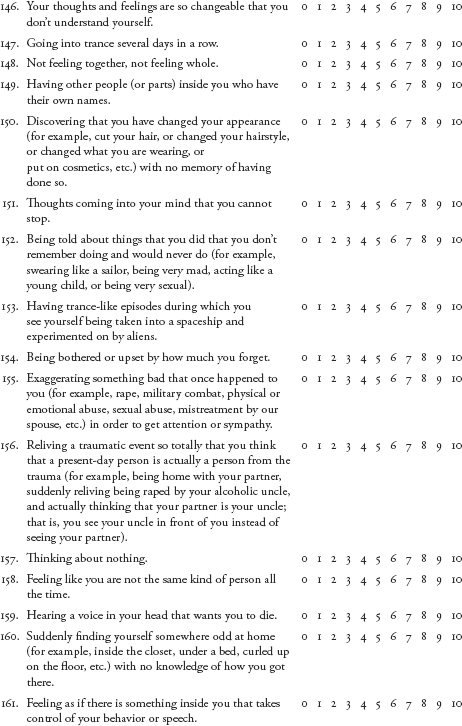
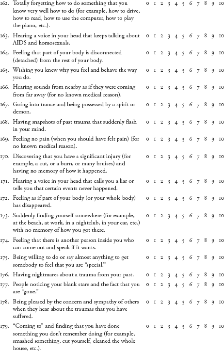
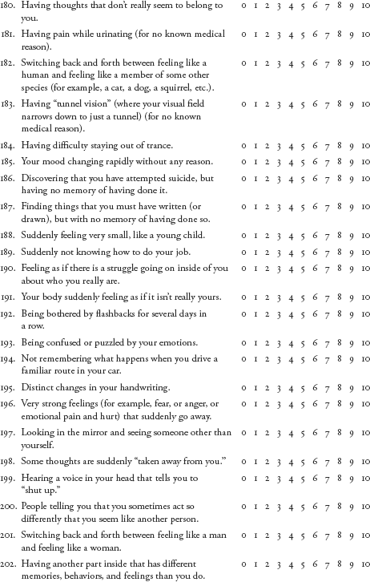
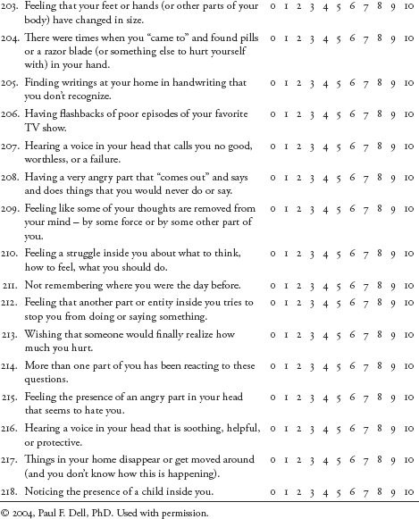
1 Available from Paul F. Dell, PhD, Trauma Recovery Center, 1709 Colley Avenue, Suite 312, Norfolk, VA 23517; PFDell@aol.com.